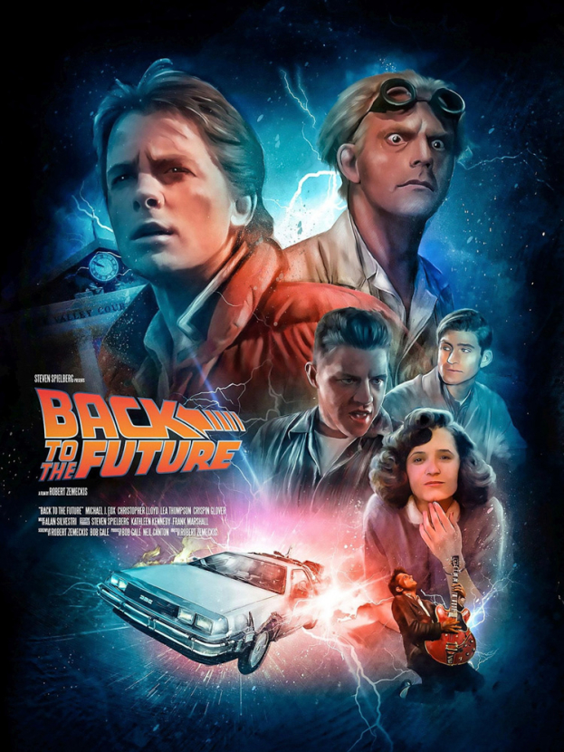

88 миль в час, машина времени DeLorean, Док Браун и Марти Макфлай. Культовый приключенческий фильм, изменивший представление о научной фантастике. Музыка Алана Сильвестри и хиты Huey Lewis.

Год выхода
Легендарная трилогия началась с путешествия в 1955 год
Кассовые сборы
Один из самых кассовых фильмов 80-х
Лучший монтаж звука
Премия Американской киноакадемии
Сценарий написали Роберт Земекис и Боб Гейл. Изначально студии отказывались от проекта, считая его «слишком мягким для подростков». Роль Марти Макфлая предлагали Майклу Джей Фоксу, но из-за занятости в сериале «Семейные узы» его не могли утвердить. Съемки начали с Эриком Штольцем, но после нескольких недель стало ясно — это не тот Марти. Фокс работал днём на сериале, а ночью — над «Назад в будущее».
Саундтрек стал отдельным культурным феноменом. «The Power of Love» группы Huey Lewis & The News достиг первого места в Billboard, а «Johnny B. Goode» в исполнении Фокса подарил новую жизнь классике Чака Берри.
Единственный автомобиль, способный путешествовать во времени. Конденсатор потока, 1.21 гигаватт, 88 миль в час.